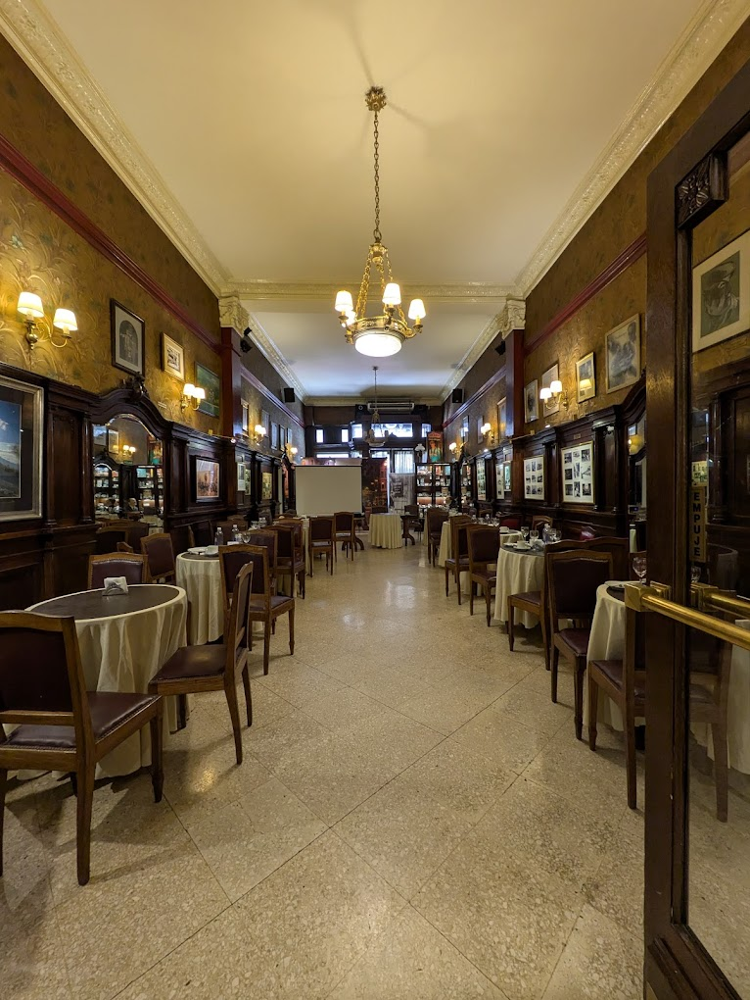

Coffee Guide
Spots:
En Buenos Aires, el café no es solo una bebida: es un encuentro, una pausa, una excusa linda para compartir.
En esta sección te acercamos una curaduría de cafeterías de especialidad que no podés dejar de visitar.
-
Café Tortoni
Fundado en 1858, es uno de los cafés más emblemáticos de la ciudad, famoso por su historia y arquitectura clásica.
 -
Cuervo Café
Con tres sedes en la ciudad, es reconocido por su café de especialidad y su ambiente acogedor, entre ellos el de Recoleta.

-
Las Violetas
Este café y confitería, inaugurado en 1884, es famoso por su elegante arquitectura y su amplia variedad de pastelería.